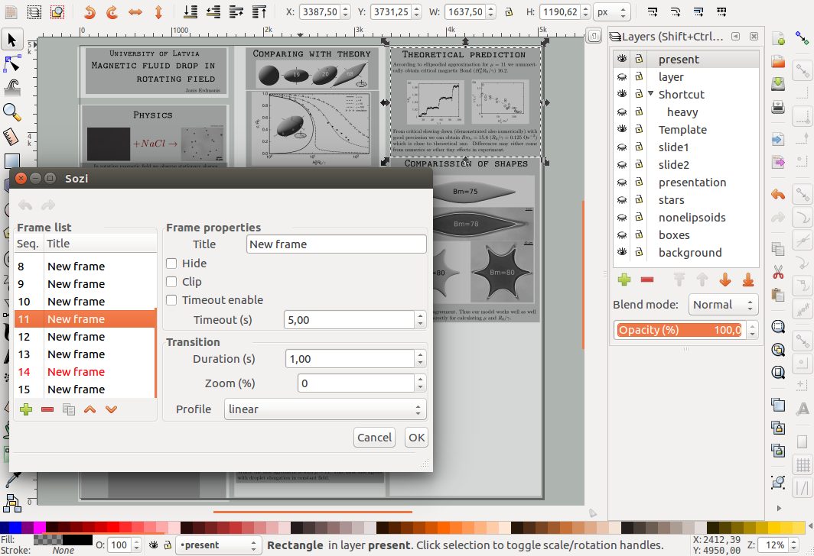
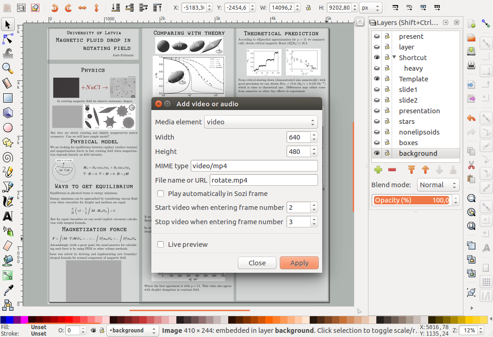

About half a year ago I was in trouble for making presentation in a seminar talk. I had experienced strange bugs with libreoffice which I was trying to get rid of. I had also tried to use latex beamer templates, but I could not stand the empty spaces and misaligned pictures. For a time I thought I had solution with ipe which was designed for scientific drawing and could edit multipage pdf document (created by ipe only) and is deeply integrated with latex. Unfortunatelly I did experience some click object bugs which made ussage of it irritating. Eventually I gave inkscape a second look.
Inkscape is the best vector graphics editor on linux which is being widelly used in physics for figure making, but requires you to use extension for including latex formulas and takes a bit a time until you learn how to make it usefull (which I also now use extensivelly). Since in presentations I use basically the same editing capabilities I thought about using also for my presentations. And I found two options - Jessylink and Sozi. With jessylink it is possible to create traditional looking presentations which converts layers to slides which sounds as a good option for me. Sozi was a better solution for me.
In Sozi you create single page first like a poster and then specify regions on which to look one each slide. I look on it as a big whiteboard on which you do organize your thoughts and then try to them with stick. The essential on how I make presentation can be seen in a following image

First thing to note that .svg specifficaction does not support flowed text (breaking into lines) thus LaTeX must be used for making also text content. The default LaTeX way of including LaTeX content Render/LaTeX gives good results, but does not allow to edit content after it is created. Thus not suitable for writting long formulas and text. Better option is Tex Text.
With Tex Text I am able to use my own LaTeX preampble which is very usefull for setting width for the text solving shortcomings of SVG specificaction. Also I can use my own macros which becomes usefull when you do copy formulas from your papper thus I bassically copied out my preamble from papper and used it in Tex Text which for my own good I paste it here
\usepackage{bm}
\usepackage[papersize={4.0in, 6.2in},total={3.9in, 6.0in}]{geometry}
% \renewcommand{\normalsize}{\fontsize{12}{12}\selectfont}
% \DeclareMathSizes{12}{7}{5}{5}
{\XXint\displaystyle\textstyle{#1}}%
{\XXint\textstyle\scriptstyle{#1}}%
{\XXint\scriptstyle\scriptscriptstyle{#1}}%
{\XXint\scriptscriptstyle\scriptscriptstyle{#1}}%
\!\int}
\def\XXint#1#2#3{{\setbox0=\hbox{$#1{#2#3}{\int}$}
\vcenter{\hbox{$#2#3$}}\kern-.5\wd0}}
\def\ddashint{\Xint=}
\def\dashint{\Xint {\boldsymbol -}}
\let\vec\boldsymbol
Sozi also offers opportunity to insert videos in SVG document making presentation more livelly. Ussually it comes in hand with downloading content cropping out some specific parts and speeding them up and converting to .mp4 which web browser can understood. While for the first part I recommend to check out youtube-dl and find many straightforward resources on how to use on internet for second part I will briefly review usage for ffmpeg converter.
For cutting out video from 1st to the 39th second of input video use
ffmpeg -i input.mp4 -vf trim=1:39 output.mp4
for speeding up video 10 times and setting output frame rate to 60
ffmpeg -i input.mp4 -r 60 -vf setpts=0.1*PTS output.mp4
and to crop specific part of a video use
ffmpeg -i input.mp4 -vf crop=outw:outh:x:y output.mp4
where outw, outh is width and height of cropped region and x, y is top left corner of the cropping region. The actions above are not limited to mp4 alone for example avi and org files are also supported. Also it is possible to nest theese actions in single line by adding multiple -vf arguments in single line.
The last step is ensuring that video is playable by browser. For avi file I do conversion with a command
ffmpeg -i input.avi -acodec libfaac -b:a 128k -vcodec mpeg4 -b:v 1200k -flags +aic+mv4 output.mp4
which gives me browser playable mp4 file. Sometimes mp4 files are not plaabale in browser. In that case I have sucessully reconverted them with a code snippet
ffmpeg -i input.mp4 -c:v libx264 -crf 23 -preset medium -c:a aac -b:a 128k -movflags +faststart -vf scale=-2:720,format=yuv420p output.mp4
which I found somewhere on internet.
When you have video in proper mp4 format you can use it in presentation with Sozi plugin. Put the video where your svg file is and add it to your svg from Extensions/Sozi Extras/Add video or audio... where video with, height and path needs to be specified. The video in inkscape should appear as a grey box which you can place where you need it. A following picture shows it in action

Recently I gave prenetation in our local conference which you can finde here. Also since it is bassically a web page I can embed content in my we page with a following code snippet
#+HTML: <embed src="../contents/Conference-2017-feb.svg" width=600 height=400 type="image/svg+xml">
I envy mac users with their keynote presentation tool but have never used it though. On Linux tools for making presentations are limited but now I have found peace letting inkscape and Sozi to make my presentations. However questions raises if Sozi will still work with later versions of inkscape as developer decided to make standalone presentation maker but fortuantellly still hosts old version.
There is some anoyances making presentations with inkscape. First one is some bug which sometimes make inkscape unable to start its extensions (for example Sozi and Tex Text) thus some restarts of inkscape are usual. Another irritation and that mainly comes from limitation of inkscape extension model is that it takes too many clicks to add a new slide. I wish I could draw rectangles and then by selecting them all generating slades at once in the same order as rectangles were created. Also videos does not work in google-chrome thus firefox must be used for showing them. Theese are however minor anoyances and takes much less time than time for focusing on content.
{kind=link}